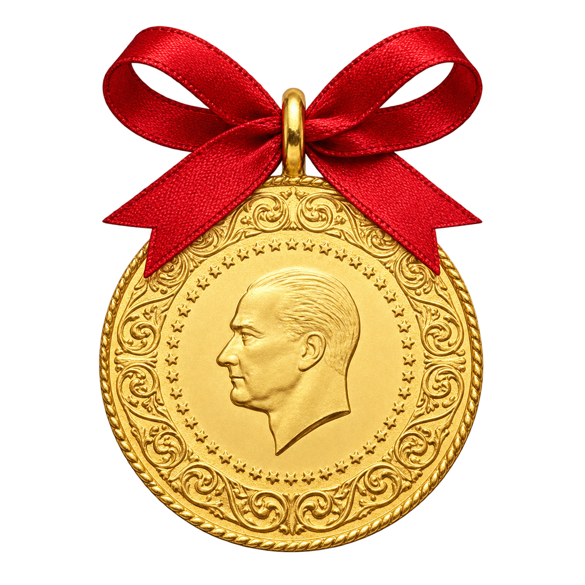

TOPLANAN ALTIN0 / 8
+1 MERCAN ADASI → AÇIK OKYANUS
KÜÇÜK BİR UÇAK. BÜYÜK BİR MACERA.
Bir ada.
Sonsuz gökyüzü.
Kanatlarını aç, okyanusa doğru havalan.
Altınları topla. Her uçuşta bir adım daha yüksel.
↑↓ yüksel / alçal · ←→ yön · G gaz
+
⌁Gökyüzü seni bekliyorUçuş için kamera veya klavye seç.
GÖVDE GAZI
%0
ⅡBir nefes molası.
Okyanus seni bekler.
⌁Vücut takibi bekleniyorKolların ve kalçan kadrajda görünsün. Takip gelince uçuş devam edecek.
Uçuş alanı açılamadı.
WebGL destekleyen bir tarayıcıda tekrar dene.